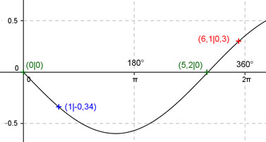

Aufgabe 182 Ergänzen Sie die Wertetabelle für x zwischen 0 und 2π: y = 0,6 sin(-0,6x) x 1 6,1 y -0,34 0,3 Berechnung der Nullstellen: 0,6 sin(-0,6x) = 0 --> 0,6 sin(-0,6x) = -0,6sin0,6x --> Substitution 0,6 x = u --> 0,6 sin u = 0 --> u = k * π mit k = 0, 1, 2, ... --> Rücksubstitution liefert 0,6x = k * π |:0,6 --> x = k * π/0,6 x1 = 0 oder 0°, x2 = π/0,6 = 5,2 gerundet oder 297,9°.  Funktionswert an einer Stelle x ermitteln: 1 * 180° x = 1 oder ---------- = 57,3° π f(1) = 0,6 sin(-0,6 * 1) = 0,6 sin(-0,6 * 57,3°) = -0,34 gerundet. Berechnung der x-Werte für y = f(x) = 0,3: f(x) = 0,3 eingesetzt, existiert zwischen π und 2π bzw. 180° und 360°. 0,6 sin(-0,6x) = 0,3 |:(0,6) --> sin -0,6x = 0,5 --> -0,6x = arc sin 0,5 = 0,52 |:(-0,6) x = -0,87 gerundet, liegt nicht im Bereich zwischen 0 und 2π --> 0,6 sin-(0,6x) (Spiegelung von 0,6sin0,6x an der x-Achse) --> 6,1 * 180° x = (5,2 + 0,87) = 6,1 oder ------------ = 349,5° gerundet. π